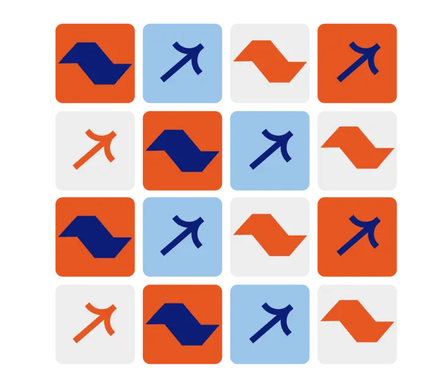

01
Você com
+ Dinheiro
Impostos mais justos e gasto público com critério, para que trabalhadores, famílias, empreendedores e contribuintes tenham mais previsibilidade.
Impostos e eficiência do gastoCandidato a Deputado Federal São Paulo · AVANTE 70

Nem Estado mínimo, nem Estado máximo.
Fazer o Estado funcionar para quem trabalha, empreende e sustenta a família, com respeito à Constituição e responsabilidade com o dinheiro público.
Por você. Pelo ABC.
Por São Paulo e pelo Brasil.

Quem é Diego Tavares?
Diego nasceu, cresceu, se formou e construiu sua vida em São Bernardo do Campo. O Grande ABC faz parte da sua identidade e da forma como enxerga os desafios de São Paulo.
Formado em Direito, atua principalmente nas áreas Criminal e Constitucional. Também levou temas jurídicos e políticos ao debate público, traduzindo assuntos complexos para a vida real de quem trabalha, empreende e sustenta uma família.
Filho de comerciantes e pai de três meninas, decidiu entrar na política porque acredita que comentar e explicar os problemas não basta quando é possível participar diretamente das decisões e cobrar resultado do Estado.
“Quem trabalha e paga impostos precisa sentir, na prática, que o Estado funciona.”
Propostas
Propostas objetivas para quem trabalha, empreende, paga impostos e espera segurança, Justiça eficiente e desenvolvimento.
Você com
Impostos mais justos e gasto público com critério, para que trabalhadores, famílias, empreendedores e contribuintes tenham mais previsibilidade.
Impostos e eficiência do gastoSP
Segurança pública com foco em resultado, proteção ao cidadão e enfrentamento sério da insegurança em São Paulo.
Segurança públicaJudiciário
Mais eficiência, responsabilidade e respeito aos limites institucionais, com segurança jurídica e coerência na aplicação das leis.
Justiça e ConstituiçãoABC
Fortalecer indústria, inovação, infraestrutura e empregos para devolver competitividade e protagonismo ao Grande ABC.
Desenvolvimento regionalTodo o Estado de São Paulo, com vínculo especial com São Bernardo do Campo e o Grande ABC.
Perguntas frequentes
Respostas rápidas sobre a candidatura, as propostas e a forma de atuação.
Advogado de São Bernardo do Campo, comentarista jurídico e político, ex-conselheiro estadual da OAB São Paulo e ex-diretor no Consórcio Intermunicipal Grande ABC. É candidato a Deputado Federal por São Paulo pelo AVANTE, número 7066.
Porque explicar e cobrar é importante, mas ele quer participar diretamente das decisões capazes de mudar a vida de quem trabalha, empreende e sustenta uma família.
Fundou escritório próprio em 2016, atuou na OAB São Paulo, no Consórcio Intermunicipal Grande ABC e como comentarista da Jovem Pan News.
Você com + Dinheiro, SP + Seguro, Judiciário + Eficiente e ABC + Indústria.
O Estado Necessário: nem Estado mínimo, nem Estado máximo. Um Estado que funcione, respeite a Constituição e entregue resultado.
A combinação de advogado, comunicador e cidadão do ABC: traduz problemas jurídicos e institucionais para a vida real e apresenta posição e saída.
Todo o Estado de São Paulo, com vínculo especial com São Bernardo do Campo e o Grande ABC.
Com fiscalização, propostas objetivas, respeito à Constituição, responsabilidade fiscal e cobrança de resultado do Estado.
Faça parte
Entre no grupo oficial, acompanhe a campanha e ajude a levar as propostas de Diego Tavares para mais pessoas em São Paulo.